Maintenance is one of the menu selections in the menu bar that can be accessed by either clicking upon "Maintenance" in the menu bar or pressing Meta+M. Its function is to calculate and display an estimate of the effort and cost necessary to maintain a post development software product for a user-defined number of years (maximum five years). Maintenance encompasses the process of modifying existing operational software while leaving its primary functions intact. This process excludes the following types of activities:
Data processing system operations, data entry, and modification of values in the database
Maintenance does include the following types of activities:
Maintenance effort and costs are determined by essentially the same cost driver attributes used to determine the software development costs and effort (exceptions are the RELY, SCED and MODP factors which will be discussed in greater detail later in this chapter). The maintenance calculations are heavily based upon the Maintenance change Factor (MCF) and the Maintenance Adjustment Factor (MAF). The MCF is similar to the Annual change Traffic in COCOMO81, except that maintenance periods other than a year can be used (see EQ 7-1).
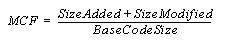
Maintenance Change Factor (EQ 7-1)
The initial maintenance size is obtained in one to two ways. The first equation in EQ 7-2 is used when the base code size is known and percentage of change to the base code is known. The second equation in EQ 7-2 is used when the fraction of code added or modified to the existing base code during the maintenance period is known.
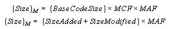
Initial Maintenance Size(EQ 7-2)
As shown in EQ 7-2, the initial maintenance size estimate is adjusted with a Maintenance Adjustment Factor (see EQ 7-3).
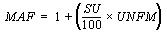
Maintenance Adjustment Factor(EQ 7-3)
The resulting maintenance effort estimation formula is the same as the COCOMOII Post Architecture development model (see EQ 7-4).
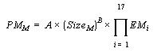
Maintenance Effort
(EQ 7-4)
As stated previously, three cost drivers for maintenance differ from development. Those cost drivers are software reliability (RELY), modern programming practices (MODP) and schedule (SCED). The reason for the change in MODP, RELY is that increased investment in software reliability and use of modern programming practices during software development have a strong positive effect upon the maintenance stage. The SCED attribute is controlled by the number of years value entered by the user. As a result the SCED driver is no longer editable in the EAF window, but is calculated from the user inputted value for number of years when the maintenance function is engaged. For more information on these cost drivers please refer to the introduction of this manual.
The Maintenance menu option offers sub-menu for either a maintenance effort estimation upon either an entire project or an individual module (see Figure 7-1). These separate options are discussed in section 7.1 and 7.2.
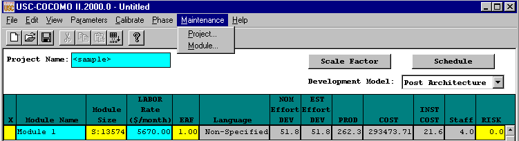
FIGURE 7-1 Maintenance sub-menu
In order to view the maintenance estimation calculations for an entire project, the user can click on Project under the Maintenance menu (see Figure 7-1). Upon clicking upon this selection a window will appear displaying the current value of the Scale Factor. Clicking on this button produces a window with the individual scale factors, each of which is independently editable (see Figure7-2).
The scale factors can be changed by clicking upon the corresponding scale factor button. This action
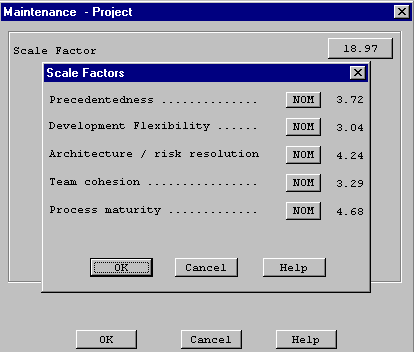
FIGURE 7-2 Project Maintenance Dialog Box
will result in the appearance of an EAF dialog box where the cost driver ratings can be changed as described in the introduction (see Figure 7-3).
Upon completing the adjustment of the scale factors click the OK button and a series of screens appear with maintenance information as shown in Figures 7-3 and 7-4. Or click the Cancel button to return to the CLEF without viewing maintenance estimations.
FIGURE 7-3 Project Maintenance window (page 1)
The second page of the maintenance window can be seen by clicking upon the Next button. It contains the settings for the 16 cost drivers, SCED is not applicable (see Figure 7-4).
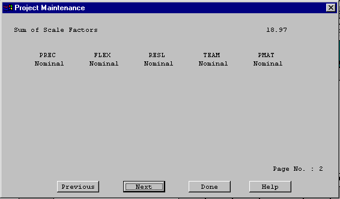
FIGURE 7-4 Project Maintenance window (page 2)
The third page of the maintenance window contains the effort and cost estimation for the next N number of years (as defined by the user). With each year is listed the KDSI (EDSI * 103), the nominal effort for development (PM nom), the actual effort for maintenance (PM maint), the number of full time software personnel necessary to maintain the project for the year (FSWP), the number of instructions that are to be maintained be per personnel(KDSI/FSWP) and the total cost for maintenance for the year (see Figure 7-5).

FIGURE 7-5 Project Maintenance window (page 3)
The fourth window of the maintenance window contains the cumulative figures for effort and cost for maintenance for the total number of years (see figure 7-6). This first displays the total number of effort estimated for maintenance, then sums the effort of development and maintenance together. It also displays the total cost of maintenance of the project and then displays the summed total cost of development and maintenance for the entire project.
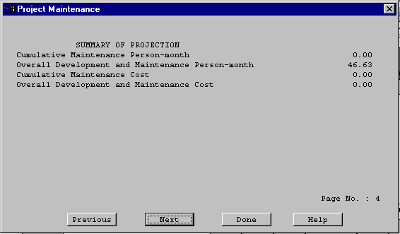
FIGURE 7-6 Project Maintenance window (page 4)
Note - Each individual page can be seen by cycling through the pages pressing either the Previous or Next buttons as needed.
7.2 Module MaintenanceIn order to view the maintenance estimation calculations for an entire module, the user can click on Module under the Maintenance menu (see Figure 7-1). Upon clicking upon this selection a window will appear displaying the current module names. Choose only one of the modules by highlighting the appropriate module name and then clicking upon OK (see Figure 7-8).
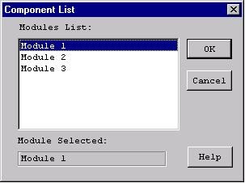
FIGURE 7-8 Module Selection window
Upon exiting the module selection window, another window will be appear that displays, the selected module name, an EAF button, an editable labor rate field, editable number of years of maintenance field, an editable percent of added source instructions field per year of maintenance and an editable percent of modified source instructions field per year of maintenance (see Figure 7-9).
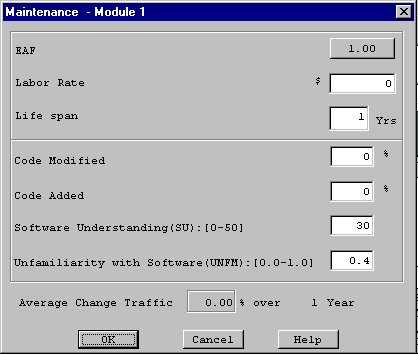
FIGURE 7-9 Module Maintenance Dialog Box
The EAF rate can be changed by clicking upon the corresponding button. This action will result in the appearance of an EAF dialog box where the cost driver ratings can be changed as described in the introduction (see Figure 7-10).
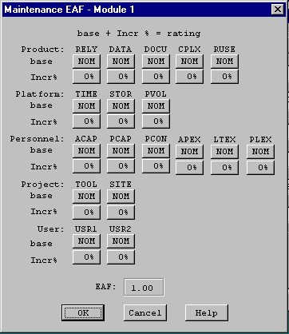
FIGURE 7-10 Module Maintenance EAF Dialog Box
Upon completing the adjustment of the cost drivers click the OK button or click the Cancel button to return to the CLEF without viewing maintenance estimations.
After exiting the EAF dialog box, you will be returned to the Module Maintenance Dialog box to continue inputting the editable values.
Click upon the OK button upon completion of editing the displayed fields or click upon the Cancel button if no changes are desired to the default values (if more assistance, the Help button is available to receive on-line assistance).
When the OK button is clicked in the Module Maintenance Dialog Box, a window displaying the first of four pages that contains the module name, the current development mode, the total number of source instructions for development of the module (EDSI) hat is loaded in the CLEF, the nominal effort of the module, the actual effort of the module, the development cost, the inputted maintenance labor rate, the inputted percent of code added during maintenance per year, the inputted percent of code modified during maintenance per year (see figure 7-11) and the calculated annual change traffic.
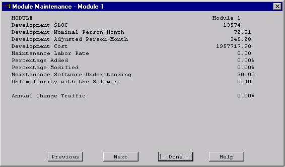
FIGURE 7-11 Module Maintenance window (page 1)
The second page of the maintenance window can be seen by clicking upon the Next button. It contains the settings for the 16 cost drivers, SCED is not applicable (see Figure 7-12).
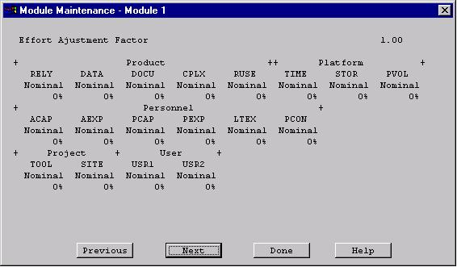
FIGURE 7-12 Module Maintenance window (page 2)
The third page of the maintenance window contains the effort and cost estimation for the next N number of years (as defined by the user). With each year is a listed the KDSI (EDSI * 103), the nominal effort for development (PM nom), the actual effort for maintenance (PM maint), the number of full time software personnel necessary to maintain the module for the year (FSWP), the number of instructions that are to be maintained be per personnel(KDSI/FSWP) and the total cost for maintenance for the year (see Figure 7-13).
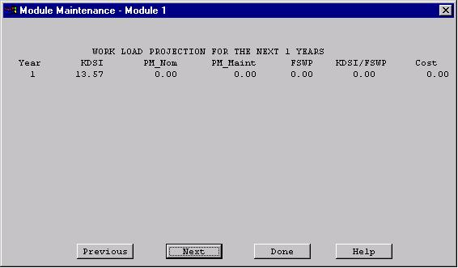
FIGURE 7-13 Module Maintenance window (page 3)
The fourth window of the maintenance window contains the cumulative figures for effort and cost for maintenance for the total number of years (see Figure 7-14). This first displays the total number of effort estimated for maintenance, then sums the effort of development and maintenance together. It also displays the total cost of maintenance of the module and then displays the summed total cost of development and maintenance for the entire module.
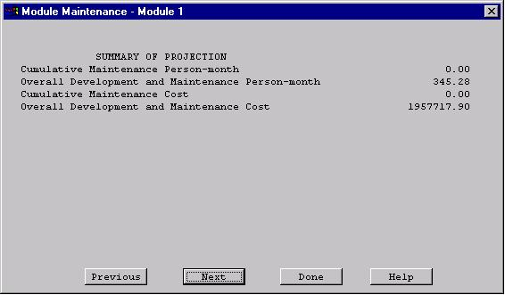
FIGURE 7-14 Module Maintenance window (page 4)
Note - Each individual page can be seen by cycling through the pages pressing either the Previous or Next buttons as needed.